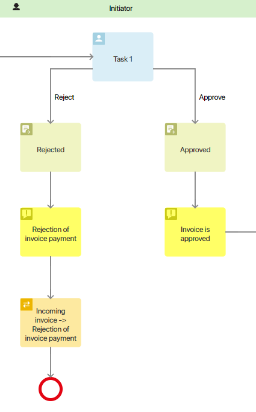
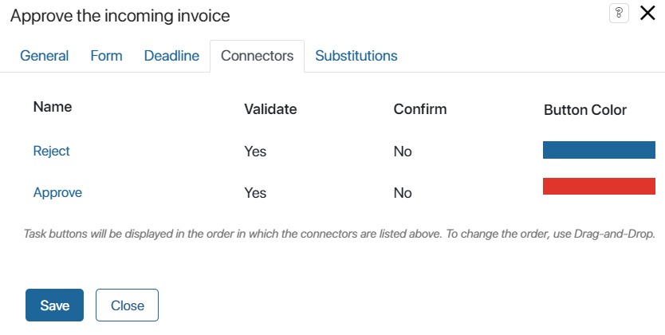
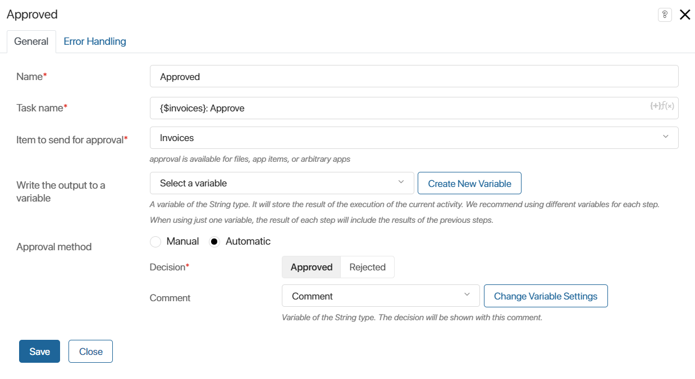
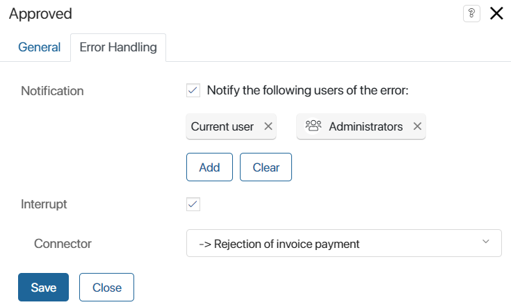

You can set up automatic approval of a document, app item or file using the Approval activity. In this case, the decision on the document is executed in a separate task that should be placed on the process diagram before the Approval activity. In this task, the employee will make a decision to Approve or Reject through the standard interface. Then the process will move to the Approval activity, which will be executed automatically. In this case, the corresponding decision will be made and an approval sheet will be created, where this decision will be recorded. Use this method when it is enough to click one button in a task and specify a comment to make a decision on a document.
To do this, place the task where the employee will make a decision on the document on the process diagram. Then set up two connectors from this task, Approve and Reject. After each connector, place the Approval activity and specify in its settings what decision will be made if the process goes along this path.
начало внимание
For automatic approvals, the Approval activity is placed on the diagram twice: one for the Approved decision, and one for the Rejected decision made by the user in the previous task.
конец внимание

Please note, with automatic approvals:
- There is no signing of the document.
- An additional file cannot be attached to the decision.
- Only one connector to the next step of the process according to the decision can be configured from the Approval activity. You can also set the connector that will be executed if an error occurs.
- By default, the final resolution is displayed in the approval sheet after the process is completed. Until then, users see the Pending approval status. To generate a final Approved or Rejected resolution after reviewing a document, file, or app item, use the End Approval activity.
Preliminary setup
Make sure to add a variable to the process context that references the approval object.
Also, add a variable of the String type to the process context that will store the approver’s comment. This variable must be filled in before the process moves to the Approval activity. Drag it on the form of the task where an employee makes a decision on a document. Place this task on the process diagram before the Approval activity.
Let’s consider an example of preliminary setup for approving an incoming invoice:
- Add a Comment variable of the String type to the process context.
- In the settings of the Approve the incoming invoice task:
- On the Form tab, drag the Comment property on the task form and mark this field as mandatory. In the property settings add a tooltip about having to fill out this field in case of rejecting the invoice;
- On the Connectors tab, configure two outgoing connectors. For the Reject button let’s enable the validation of the mandatory field Comment.

Once the executor completes the Approve the incoming invoice task, the process will move to the Approval activity, which will be executed automatically.
Configure automatic approval
On the process diagram, configure two Approval activities. In one of them set the decision Rejected and in the other one set the decision Approved.
To go to the activity settings, double-click on its shape in the process diagram. The settings window contains the Main and Error Handling tabs.
Main tab

- Name*. Enter a name that will be displayed in the process diagram;
- Task name*. The text entered in this field will be seen by the executor in the task list or on the task page, if manual approval is set up;
- Item to send for approval*. Specify the context variable that refers to a file or app;
- Write the output to a variable. Specify a variable of the String type to which the code of the result of the current activity execution will be written. The result depends on the value selected below in the Decision* field. Accordingly,
approvedorrejectedwill be written to the specified variable. If the agreement is terminated, theterminatedvalue will be written. This variable can be placed on the app form, as well as used in gateways or scripts; - Approval method. Select the Automatic option. Then the following fields will be displayed below:
- Decision*. Select the option that will be displayed in the approval sheet;
- Comment. Specify the variable, the value of which will be displayed in the approval sheet together with the selected decision. Please note, that the variable must be filled in before the process moves to the Approval activity.
Error Handling tab
For automatic approval, you can specify which path the process will follow in case of an error. Also, select the users who will be notified about the error.

When the settings are complete, click Save.
Found a typo? Select it and press Ctrl+Enter to send us feedback